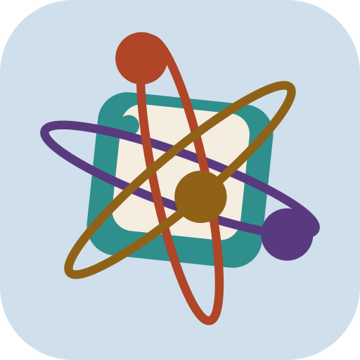
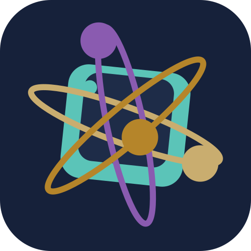
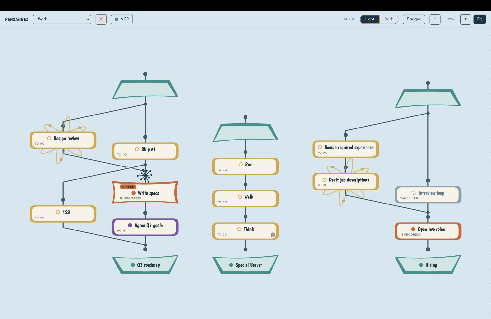

PensaGrex
Keep track of what you & your AI are doing
Build branching trees of tasks in cooperation with your AI. You and your AI can add and edit markdown notes for any task. Drag & drop tasks and trees of tasks to wherever you want. Flag the tasks you want your AI to focus on. Let your AI change tasks as it works on them, and you’ll see it all happen, as it happens, in PensaGrex.
Download
…Windows and Linux builds are unsigned, so the OS may warn on first launch. See all releases.



A domain of task trees, live.
The structure is the model.
Task, fork, stack. The tree is the shape of the work, not a decoration on a flat list.
Legible at a glance.
Status is colour, a fork is a junction, and the leaning marquee shows where you are before you read a word.
Yours, and local.
One JSON5 file per domain beside its markdown notes. Grep it, diff it, sync it, keep it.